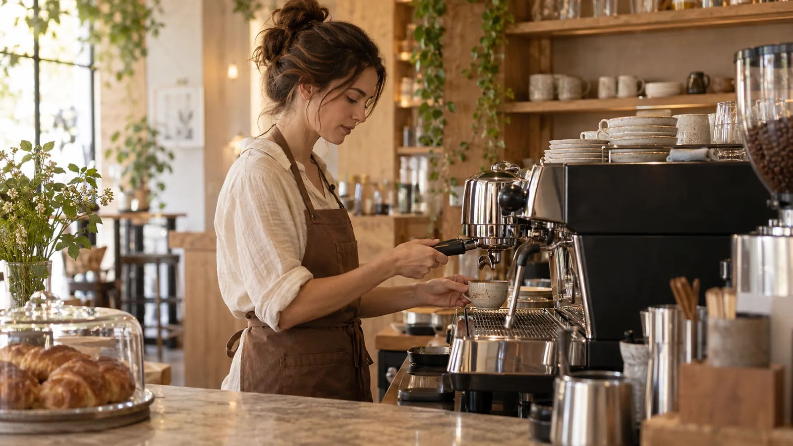

Doble espresso con leche microespumada. Intenso, dulce y suave al mismo tiempo.
Café, sin prisa.
Un buen café.
Un mejor
momento.
Para los que disfrutan lo simple: una taza bien hecha, algo recién horneado y un ratito para quedarse.
Encuentra tu favorito ↗HECHO
CON CALMA
✳
CON CALMA
✳
 Pequeños rituales, grandes días.
Pequeños rituales, grandes días.
Café de especialidad ✳Horneado con cariño ✳Disfrutar lo cotidiano ✳

De la barra a tu taza
Un buen ritual
empieza antes
del primer sorbo.
Probamos el café, ajustamos la molienda y cuidamos cada extracción. Hay días para un espresso corto y otros para quedarse junto a una taza de filtro.
Nuestra barra está abierta a la curiosidad. Si quieres conocer el origen, comparar sabores o encontrar tu bebida, te acompañamos.
Volver a la carta ↗Nos vemos en Maré
Una mesa.
Un café.
Tiempo para ti.
Hay luz de mañana, mesas para conversar y un rincón para leer. Ven solo, con alguien o con ganas de dejar el teléfono a un lado.
El lugar
Pasaje Olivo 12
Barrio del Jardín
Cuándo pasar
- Lunes a viernes
- 08:00 — 19:00
- Sábados y domingos
- 09:00 — 18:00
La barra y los horneados acompañan todo el día. Para una pausa larga, las mañanas suelen ser el mejor momento.
Maré, detrás de la barra
Una buena taza.
Un negocio organizado.
Explora la gestión diaria de la cafetería y sigue el recorrido de la información.